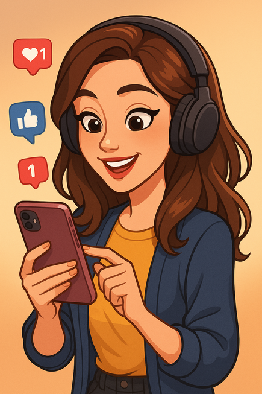
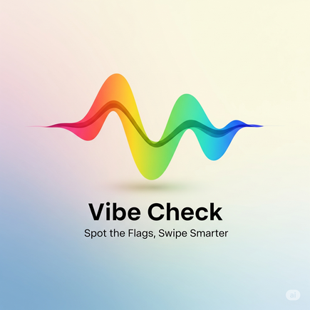
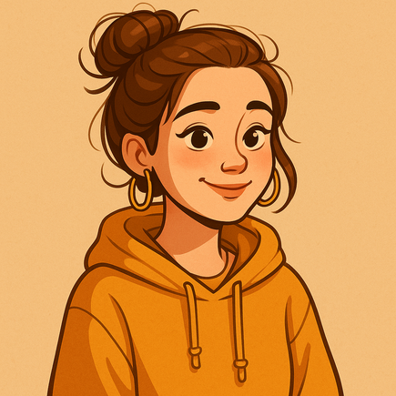
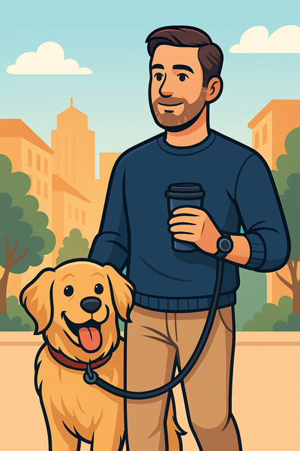
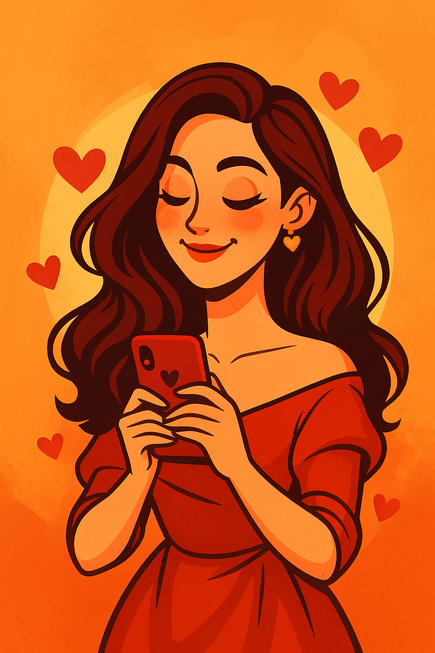
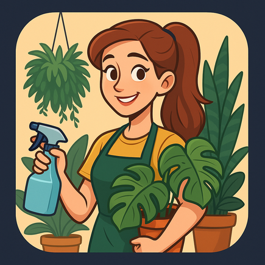
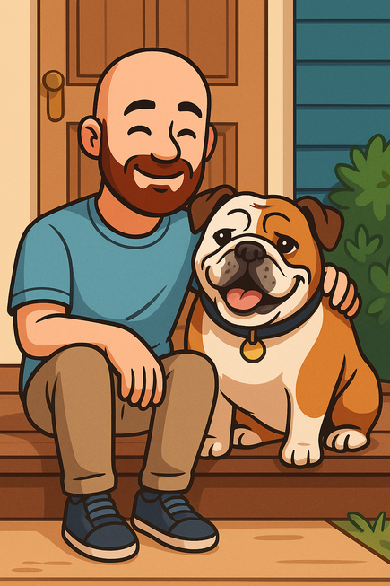
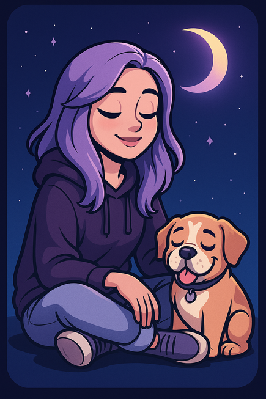
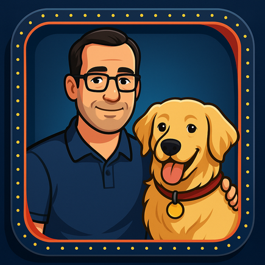
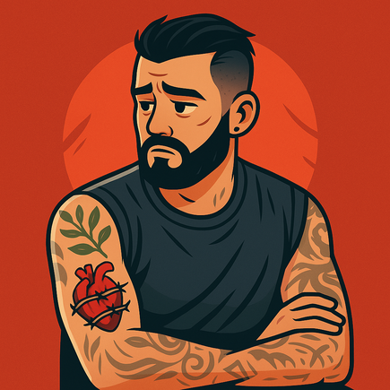

How to use: Read each profile, discuss, then click the buttons to reveal Red/Yellow/Green flags and “Why it matters.” Finish with the reflection questions.


ScrollQueen87, 30
"DMs open, heart TBD."
I live online. My life is curated, filtered, and fully documented. I thrive on likes, laughs, and late-night doomscrolling. Text me—just don’t call. IRL can wait. Connection feels safer with a screen in between.
Favorite Movie: Her
Fictional Character: Alexis Rose (Schitt’s Creek)
Interests: TikTok trends, aesthetic boards, digital journaling, online quizzes
Blind Spot: Equates digital connection with emotional depth
Struggles to disconnect from social media; avoids emotional presence
May value public image over private intimacy
Expressive, engaging, responsive communicator
Digital expression isn’t the same as emotional vulnerability. When identity is curated for likes, intimacy can feel unsafe. Attachment Style Insight: Likely anxious-avoidant (disorganized)
Reflection Questions:
Do you find yourself using distractions like social media to avoid deeper emotional experiences?
Have you ever been drawn to someone who was emotionally unavailable but highly engaging online?
GrindSetGreg, 36
"Success is the love language."
Entrepreneur. Gym rat. Coffee-fueled achiever. I work hard because I want a life of freedom—but I haven’t taken a vacation since 2017. I schedule everything—except emotional presence. You’ll always come second… to my calendar.
Favorite Movie: The Wolf of Wall Street
Fictional Character: Harvey Specter (Suits)
Interests: Productivity podcasts, gym selfies, audiobooks at 2x speed
Blind Spot: Mistakes control for safety, productivity for worth
Over-identifies with work; intimacy may be low-priority or performative
Struggles to make space for others' emotional needs
Driven, disciplined, financially secure
When achievement becomes identity, relationships can feel like inefficiencies. Beneath the grind may be fear of failure, abandonment, or emotional dependence. Attachment Style Insight: Likely avoidant
Reflection Questions:
Have you ever prioritized productivity or success at the cost of emotional connection?
What does 'being enough' mean to you—and where did that belief come from?

YesGirlJess, 29
"I just want you to be happy."
Whatever you like—I like. I’m chill, easygoing, and always down to try what you want. My favorite color? Hmm… what’s yours? I lose myself in love and then wonder why I feel invisible.
Favorite Movie: Runaway Bride
Fictional Character: Bubbles (The Powerpuff Girls)
Interests: Trying new things (for others), quiet time, Pinterest boards
Blind Spot: Mistakes pleasing others for connection and worth
Loses identity in relationships; difficulty setting boundaries
Low self-expression; may hide preferences
Flexible, generous, conflict-avoidant
When identity is shaped around others, the relationship lacks authenticity. Appeasing isn’t the same as loving. Attachment Style Insight: Likely anxious/preoccupied
Reflection Questions:
In relationships, do you voice your needs—or do you default to keeping the peace?
What’s the difference between kindness and self-abandonment?

MrSteadyEddy, 42
"Predictable? Maybe. Present? Always."
I work in logistics. I get up at 6, walk the dog, make coffee, and go to work. Weekends are for errands and laundry. I’m emotionally available, debt-free, and never ghost. May contain traces of dad jokes.
Favorite Movie: A Beautiful Day in the Neighborhood
Fictional Character: Samwise Gamgee (Lord of the Rings)
Interests: Cooking, crossword puzzles, early morning walks
Blind Spot: May assume emotional consistency is enough for intimacy
None obvious—potential mismatch only if you're seeking drama or chaos
May lack spontaneity or emotional intensity
Reliable, mature, emotionally secure
Stability can be mistaken for “boring,” especially if you’ve been conditioned for chaos. But steady presence is often a hallmark of healthy relationships. Attachment Style Insight: Secure
Reflection Questions:
Are you drawn to drama and intensity because calm feels unfamiliar?
Could 'boring' actually be a sign of emotional safety?

FireHeart19, 33
"If it’s not intense, is it even real?"
I love big. First dates feel like soul connections. If I don’t hear from you in 4 hours, I assume you died. I’ll make you playlists, pasta, and promises by week two. I crave closeness—but sometimes I smother.
Favorite Movie: Eternal Sunshine of the Spotless Mind
Blind Spot: Mistakes emotional highs for healthy connection
Emotional enmeshment, possible trauma bonding or boundary issues
Fast-moving intensity may be anxiety-driven
Passionate, emotionally expressive, creative
Intensity isn’t always intimacy. Fast connections can mask deep fears of abandonment or being alone. Attachment Style Insight: Likely anxious/preoccupied
Reflection Questions:
Have you ever mistaken emotional intensity for love or security?
What pace of connection feels safe and sustainable for you?

PlantLadyPaige, 31
"I nurture everything… except my own needs."
My home is a jungle. I name my houseplants, talk to them daily, and panic if I’m away overnight. I say I want a relationship, but between my misting routine and grow light setup, I’m not sure there’s room for another living being.
Blind Spot: Substitutes control and caretaking for emotional risk
Substitutes emotional connection with caretaking; fear of unpredictability in human relationships
May avoid intimacy with people in favor of control over environment
Nurturing, consistent, attentive to care
Caring for plants feels safe—people are messier. When relationships feel uncontrollable, caretaking routines can become a shield from emotional closeness. Attachment Style Insight: Likely avoidant
Reflection Questions:
Do you ever pour your care into things (plants, pets, projects) instead of people?
What makes human connection feel more risky than caretaking?

JustHere4TheDog, 38
"If my dog doesn’t like you, we’re done."
Not looking for anything serious… unless you love my dog, Baxter. I talk to him more than most humans. We’re a package deal, but I’ll probably trust him more than you for the first 6 months.
Favorite Movie: Homeward Bound
Fictional Character: Ron Swanson (Parks and Rec)
Interests: Long walks (with Baxter), dog parks, grilling, crime shows
Blind Spot: Avoids emotional exposure by filtering connection through pet loyalty
May fear human intimacy; projects emotional needs onto pet
May use pet as emotional buffer or avoidant shield
Have you ever felt safer bonding with animals than with people?
What makes trust feel risky in human relationships?

MissMysticMoon, 26
"Vibe with me… just don’t ask too many questions."
Soft-spoken stoner with big opinions I rarely say out loud. I disappear when I feel too seen. I say I hate drama but somehow always end up in emotional avalanches. My favorite emotion is nostalgia.
Favorite Movie: The Virgin Suicides
Fictional Character: Daria Morgendorffer (Daria)
Interests: Astrology, incense, sad playlists, vintage sweaters
Blind Spot: Equates withdrawal with self-protection—even when it damages connection
Unstable boundaries, escapism, self-isolation
Avoids direct conflict, tends toward emotional suppression
Reflective, sensitive, creatively expressive
Disappearing isn’t the same as resetting. Emotional safety means showing up even when uncomfortable. Attachment Style Insight: Likely disorganized
Reflection Questions:
How do you typically respond when you feel emotionally overwhelmed?
Do you associate intensity or withdrawal with love—and where did that idea start?

LogisticsLarry, 41
"No frills. No drama. No BS."
I’m not exciting, but I’m solid. I’ve worked in freight for 18 years. I get up at 6, walk the dog, cook dinner at 6:30. No drama, no games, no TikTok. Looking for calm. Looking for kind.
Favorite Movie: The Straight Story
Fictional Character: Hank Hill (King of the Hill)
Interests: Home repairs, local diners, oldies radio, grilling
Blind Spot: Assumes emotional presence is demonstrated through routine, not expression
None obvious—but risk of feeling “flat” if partner is used to intensity
May come across emotionally muted or unadventurous
Reliable, mature, grounded
If chaos feels normal, calm can seem suspicious—but it's often exactly what’s needed for healing. Attachment Style Insight: Secure
Reflection Questions:
Do you associate calm with boredom or emotional distance?
What does emotional safety look like to you?

TraumaTatted, 34
"My scars tell stories. Some still sting."
I’ve seen things. Been through hell. My tattoos are all symbols of survival. I’ve done the work, but I still live on edge. If you cancel plans, my brain says you don’t care.
Favorite Movie: Requiem for a Dream
Fictional Character: Tommy Gavin (Rescue Me)
Interests: Boxing, body art, trauma podcasts, memoirs
Blind Spot: Mistakes intensity for investment; trust for control
Past trauma may dominate relationship unless well-regulated
Hypervigilant, easily triggered, reactive
Emotionally honest, self-aware, committed to healing
Trauma survivors may love deeply—but fear or dysregulation can sabotage the connection they crave. Attachment Style Insight: Likely disorganized or fearful-avoidant
Reflection Questions:
Has trauma ever made it hard for you to trust good things?
What helps you feel grounded and safe when connection starts to feel overwhelming?